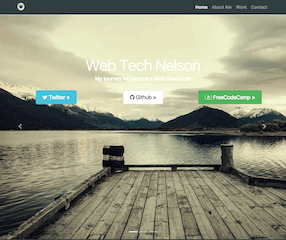
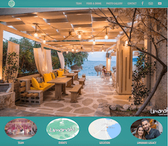

Obejective:
Challenges:
- Build the tribute page with just one image & text. The challenge is to create the page without styling.
- No look at the page source allow.
- Apply HTML & Bootstrap Framework.
Achievements:
- I wanted to put in practice HTML as much I could, do instead of using a framework, I created the web page just with HTML, 1 line of CSS & no Bootstrap or Javascript.
learnt knowledge on this project:
- A very good comprehension of HTML tags in order to balance the lack of CSS.

My Online Portfolio
I built my CodePen Portfolio into a hosting website with Bootstrap. the most Popular framework for developing responsive, mobile first projects on the web.
webtechnelson
Obejective:
- Build my online Portfolio with Responsive pattern & mobile-first ideology.
Challenges:
- Build a simple, friendly & fast online-portfolio for Mobile & desktop devices. This Portfolio will describe my roadmap to become a Web Developer f
- Web Responsive Design Pattern.
- Mobile First Ideology!
- Apply SEO strategies to get the site Indexed by Google Search Engine.
Achievements:
learnt knowledge on this project:
- Implementation of HTML, CSS, Javascript using the Framework Bootstrap to build a site following responsive & mobile first design.
- SEO strategies to have the web site found in Google Search.
- Use of Read-Search-Ask strategy to solve any inquiry.

My first real website
This is my first Serious Front End Devlopment Project Based in Bootstrap. the most Popular framework for developing responsive, mobile first projects on the web.
Limanaki Cafe Bar
Obejective:
- Build a real Responsive Website to help a friend to make a presence on the web for her business.
Challenges:
- Build a simple, friendly & fast web site for Mobile & desktop devices with useful content to attract new customers.
- Web Responsive Design Pattern.
- Mobile First Ideology!
- Apply SEO strategies to get the site Indexed by Google Search Engine.
Achievements:
learnt knowledge on this project:
- Implementation of HTML, CSS, Javascript using the Framework Bootstrap to build a site following responsive & mobile first design.
- jQuery Library Application to give special effects in one part of the web site.
- SEO strategies to have the web site found in Google Search.
- Use of Read-Search-Ask strategy to solve any inquiry.